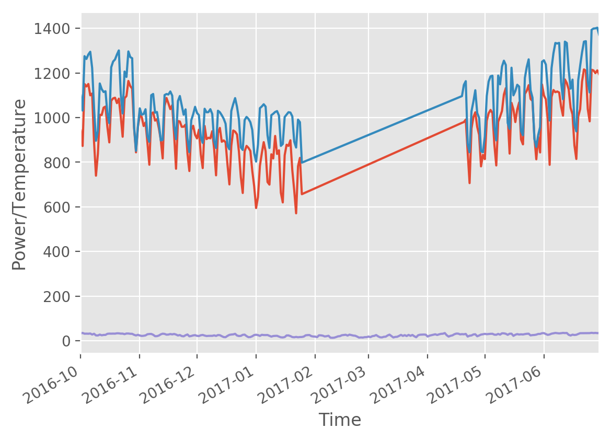
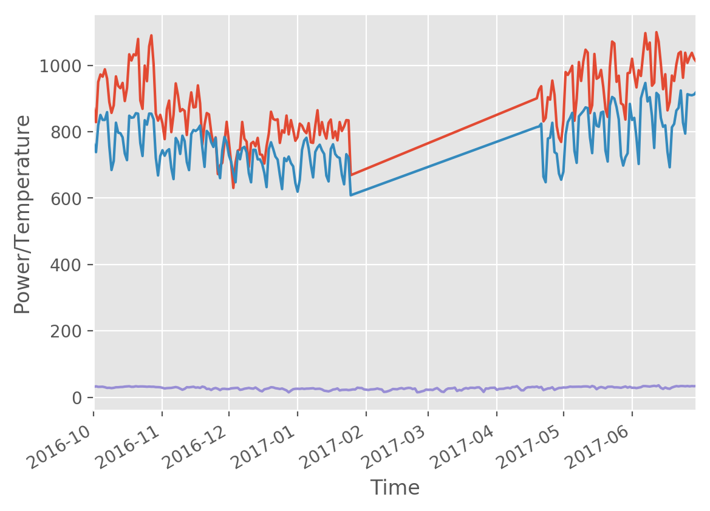
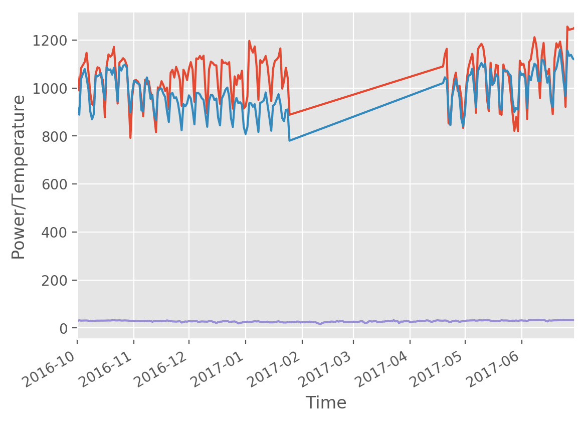
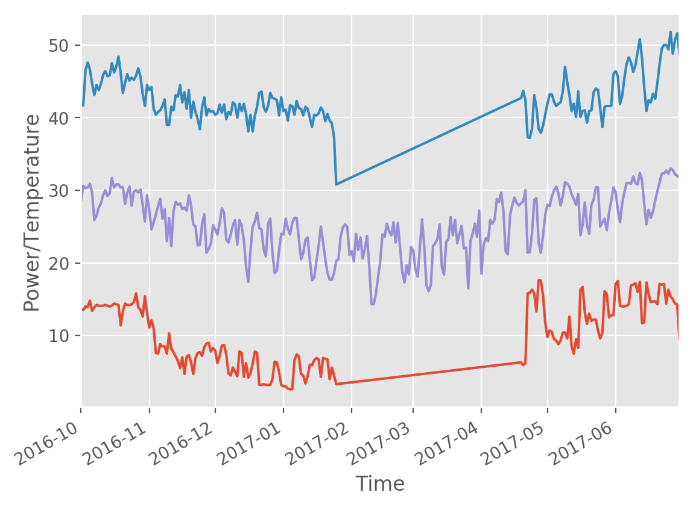

Homework 0: Data Preprocessing and Exploring the Dataset
REPORT
0316213 蒲郁文
首先，分析原始資料的格式，建立資料庫，撰寫程式剖析原始資料並將資料匯入資料庫。
由於未來幾次作業應該都還會用到這些資料 (?)，所以我將所有可能用得到的資料都匯入。
需要特別說明的地方，我都有寫註解，請參閱我的程式碼。
附帶一提，原始資料中的氣象資料的每日統計的部分可能有誤，其最高溫與最低溫都相同。
資料表結構：
CREATE TABLE `Power` (
`updateTime` datetime NOT NULL,
`northSupply` double DEFAULT NULL,
`northUsage` double DEFAULT NULL,
`centerSupply` double DEFAULT NULL,
`centerUsage` double DEFAULT NULL,
`southSupply` double DEFAULT NULL,
`southUsage` double DEFAULT NULL,
`eastSupply` double DEFAULT NULL,
`eastUsage` double DEFAULT NULL,
KEY `idx` (`updateTime`)
) ENGINE=InnoDB DEFAULT CHARSET=utf8;
CREATE TABLE `每日統計` (
`測站` varchar(255) NOT NULL,
`時間` date NOT NULL,
`當日最高溫度` double DEFAULT NULL,
`當日最低溫度` double DEFAULT NULL,
`當日平均溫度` double DEFAULT NULL,
KEY `idx` (`測站`)
) ENGINE=InnoDB DEFAULT CHARSET=utf8;
CREATE TABLE `逐時觀測` (
`測站` varchar(255) NOT NULL,
`時間` datetime NOT NULL,
`測站氣壓` double DEFAULT NULL,
`溫度` double DEFAULT NULL,
`相對濕度` double DEFAULT NULL,
`風速` double DEFAULT NULL,
`風向` varchar(255) DEFAULT NULL,
`降水量` double DEFAULT NULL,
`日照時數` double DEFAULT NULL,
KEY `idx` (`測站`)
) ENGINE=InnoDB DEFAULT CHARSET=utf8;
剖析、匯入氣象資料：
Remark: 24:00 is not allowed in MariaDB datetime, change it to 23:59.
#!/usr/bin/env python3
# -*- coding: utf-8 -*-
import mysql.connector as mariadb
import xml.etree.ElementTree as ElementTree
if __name__ == '__main__':
cnx = mariadb.connect(user='root', host='localhost', database='dm', charset='utf8')
cursor = cnx.cursor()
tree = ElementTree.parse('../dataset/weather.xml')
root = tree.getroot()
ns = {'cwb': 'urn:cwb:gov:tw:cwbcommon:0.1'}
for loc in root.find('cwb:dataset', ns).findall('cwb:location', ns):
sta = loc.find('cwb:locationName', ns).text
for cat in loc.findall('cwb:weatherElement', ns):
if cat.find('cwb:elementName', ns).text == '逐時觀測':
for row in cat.findall('cwb:time', ns):
time = row.find('cwb:obsTime', ns).text + ':00' # YYYY-MM-DD HH:MM:SS
if time.endswith('24:00:00'): # 24:00 is not allowed in MariaDB datetime
time = time.replace('24:00:00', '23:59:59') # change it to 23:59
p, t, h, v, d, r, s = None, None, None, None, None, None, None
for col in row.findall('cwb:weatherElement', ns):
if col.find('cwb:elementName', ns).text == '測站氣壓':
p = col.find('cwb:elementValue', ns).find('cwb:value', ns).text
elif col.find('cwb:elementName', ns).text == '溫度':
t = col.find('cwb:elementValue', ns).find('cwb:value', ns).text
elif col.find('cwb:elementName', ns).text == '相對濕度':
h = col.find('cwb:elementValue', ns).find('cwb:value', ns).text
elif col.find('cwb:elementName', ns).text == '風速':
v = col.find('cwb:elementValue', ns).find('cwb:value', ns).text
elif col.find('cwb:elementName', ns).text == '風向':
d = col.find('cwb:elementValue', ns).find('cwb:value', ns).text
elif col.find('cwb:elementName', ns).text == '降水量':
r = col.find('cwb:elementValue', ns).find('cwb:value', ns).text
r = None if r == 'T' else r # some record has invalid value T
elif col.find('cwb:elementName', ns).text == '日照時數':
s = col.find('cwb:elementValue', ns).find('cwb:value', ns).text
else:
print('WTF?!', col.find('cwb:elementName', ns).text)
query = (
"INSERT INTO 逐時觀測 "
"(測站, 時間, 測站氣壓, 溫度, 相對濕度, 風速, 風向, 降水量, 日照時數) "
"VALUES (%s, %s, %s, %s, %s, %s, %s, %s, %s)"
)
cursor.execute(query, (sta, time, p, t, h, v, d, r, s))
elif cat.find('cwb:elementName', ns).text == '每日統計':
for row in cat.findall('cwb:time', ns):
time = row.find('cwb:obsTime', ns).text + ' 00:00:00' # YYYY-MM-DD HH:MM:SS
ht, lt, at = None, None, None
for col in row.findall('cwb:weatherElement', ns):
if col.find('cwb:elementName', ns).text == '當日最高溫度(°C)':
ht = col.find('cwb:elementValue', ns).find('cwb:value', ns).text
elif col.find('cwb:elementName', ns).text == '當日最低溫度(°C)':
lt = col.find('cwb:elementValue', ns).find('cwb:value', ns).text
elif col.find('cwb:elementName', ns).text == '當日平均溫度(°C)':
at = col.find('cwb:elementValue', ns).find('cwb:value', ns).text
else:
print('WTF?!', col.find('cwb:elementName', ns).text)
query = (
"INSERT INTO 每日統計 "
"(測站, 時間, 當日最高溫度, 當日最低溫度, 當日平均溫度) "
"VALUES (%s, %s, %s, %s, %s)"
)
cursor.execute(query, (sta, time, ht, lt, at))
else:
print('WTF?!', cat.find('cwb:elementName', ns).text)
cnx.commit()
cursor.close()
cnx.close()
剖析、匯入台電 JSON 資料：
Remark: Use the "updateTime" in "reserveData" because it is detailed and uses local timezone.
#!/usr/bin/env python3
# -*- coding: utf-8 -*-
import datetime
import mysql.connector as mariadb
import json
def parse_time(str_time):
t1 = str_time.split('(')
t2 = t1[0].split('.')
y, m, d = t2[0], t2[1], t2[2]
t2 = t1[1].split(')')
t3 = t2[1].split(':')
h, i, s = t3[0], t3[1], 0
dt = datetime.datetime(int(y)+1911, int(m), int(d), int(h), int(i), int(s))
return dt
if __name__ == '__main__':
cnx = mariadb.connect(user='root', host='localhost', database='dm', charset='utf8')
cursor = cnx.cursor()
with open('../dataset/power.json') as fp:
rows = json.load(fp)
for row in rows:
# print(json.dumps(row, indent=4))
ut = parse_time(row['reserveData']['updateTime'])
# use the "updateTime" in "reserveData" because it is detailed and uses local timezone
ns = row['regionData']['northSupply']
nu = row['regionData']['northUsage']
cs = row['regionData']['centerSupply']
cu = row['regionData']['centerUsage']
ss = row['regionData']['southSupply']
su = row['regionData']['southUsage']
es = row['regionData']['eastSupply']
eu = row['regionData']['eastUsage']
query = (
"INSERT INTO Power "
"(updateTime, northSupply, northUsage, centerSupply, centerUsage,"
" southSupply, southUsage, eastSupply, eastUsage) "
"VALUES (%s, %s, %s, %s, %s, %s, %s, %s, %s)"
)
cursor.execute(query, (ut, ns, nu, cs, cu, ss, su, es, eu))
cnx.commit()
cursor.close()
cnx.close()
剖析、匯入台電 CSV 資料：
Remark: Records on 2017/9/2 are inconsistent, remove those in JSON file.
#!/usr/bin/env python3
# -*- coding: utf-8 -*-
import mysql.connector as mariadb
import os
if __name__ == '__main__':
cnx = mariadb.connect(user='root', host='localhost', database='dm', charset='utf8')
cursor = cnx.cursor()
cursor.execute("DELETE FROM Power WHERE DATE(updateTime) = '2017-09-02'")
# records on 2017/9/2 are inconsistent, remove those in JSON file
cnx.commit()
parent = os.path.join('..', 'dataset')
files = os.listdir(parent)
for file in files:
if file.endswith('.csv'):
with open(os.path.join(parent, file)) as fp:
rows = fp.readlines()
rows = [r.strip() for r in rows]
date = file.split('.csv')[0]
for row in rows:
cols = row.split(',')
time = str(date) + ' ' + cols[0] + ':00' # YYYY-MM-DD HH:MM:SS
query = (
"INSERT INTO Power "
"(updateTime, northSupply, northUsage, centerSupply, centerUsage,"
" southSupply, southUsage, eastSupply, eastUsage) "
"VALUES (%s, %s, %s, %s, %s, %s, %s, %s, %s)"
)
data = (time, cols[1], cols[2], cols[3], cols[4], cols[5], cols[6], cols[7], cols[8])
cursor.execute(query, data)
print(file, 'imported')
cnx.commit()
cursor.close()
cnx.close()
第二部分，查詢資料。
第 (a) 小題查詢語句：
SELECT DATE(Power.updateTime), MAX(Power.northSupply), MAX(Power.northUsage),
MAX(Power.centerSupply), MAX(Power.centerUsage), MAX(Power.southSupply),
MAX(Power.southUsage), MAX(Power.eastSupply), MAX(Power.eastUsage)
FROM Power
WHERE DATE(Power.updateTime) BETWEEN '2016-10-01' AND '2017-06-30'
GROUP BY DATE(Power.updateTime)
第 (a) 小題答案：
DATE(Power.updateTime) MAX(Power.northSupply) MAX(Power.northUsage) MAX(Power.centerSupply) MAX(Power.centerUsage) MAX(Power.southSupply) MAX(Power.southUsage) MAX(Power.eastSupply) MAX(Power.eastUsage)
2016-10-01 943 1099.4 869.9 763.5 1045.2 918.3 13.6 41.8
2016-10-02 872.9 1031.6 828.8 738.5 989.5 889.3 13.5 41.7
2016-10-03 1150.5 1275.4 950.2 820 1083 1038.7 14 46.5
2016-10-04 1139.6 1263 972.5 850.6 1095.8 1059 13.9 47.6
2016-10-05 1150.8 1282.9 966 835.6 1109 1079.4 14.8 46.6
2016-10-06 1099.9 1295.1 988.2 835.6 1146.8 1042.9 13.4 44.7
2016-10-07 1108.1 1222.4 960.3 859 1069.6 997.1 13.9 43.1
2016-10-08 890.7 1041.2 889.5 756.9 980 903.7 14.2 44.5
2016-10-09 739.8 896.2 856.8 684.7 932.8 869.6 14.1 43.8
2016-10-10 837.1 939.2 879.5 711.8 927.6 892.9 14.1 44.6
2016-10-11 1012.7 1153 966.8 827.2 1059.9 1052.8 14.1 45.9
2016-10-12 1011.5 1127.9 938.1 797.1 1086.7 1048.7 14.2 46.4
2016-10-13 1044.8 1114.8 931.1 795.6 1083.1 1054.2 14.1 45.7
2016-10-14 1049.5 1118.2 947.2 783.2 1043.8 1061.8 14 45.8
2016-10-15 957.5 1018.1 892.5 734.3 1035.2 993.7 14.1 47.5
2016-10-16 889 975.3 931.7 714.4 878.5 951.6 14.4 46.2
2016-10-17 1075.3 1225.7 1033.3 848.3 1092.4 1086.8 14.3 47
2016-10-18 1086.3 1251.4 1014.6 842.1 1140.2 1074.8 14.2 48.4
2016-10-19 1089.1 1260.7 1033.2 843.4 1130.6 1077.8 11.4 46.1
2016-10-20 1065 1282.7 1030.2 855.9 1138.5 1055.9 13.3 43.4
2016-10-21 1084.9 1301.1 1079.6 854.4 1171.6 1085 14.4 44.8
2016-10-22 1005.9 1108 894.2 765.6 1061.6 1027.7 14.2 46
2016-10-23 914.3 1018.8 869 726.9 935.7 944 14.2 45.1
2016-10-24 1086.9 1206.4 999.3 834.8 1106.4 1089.8 14.3 45.5
2016-10-25 1096.6 1182.4 952.3 821.2 1114.1 1072.9 14.6 45.2
2016-10-26 1164.3 1296.6 1057.6 854.7 1124.5 1091.5 15.8 45.8
2016-10-27 1141.1 1271.3 1090.4 854.4 1115.9 1098.3 13.9 46.8
2016-10-28 1130.3 1266.1 1004.5 837.4 1094.9 1085.5 13.5 45.6
2016-10-29 953 959.9 854.9 721.5 954.6 973.6 12.6 43.3
2016-10-30 844.4 851.3 833.4 668.3 792.4 898.5 15.4 41.6
2016-10-31 957 960.9 850.9 726.6 963.5 983.1 13.1 44.5
2016-11-01 1012 1041.4 825.3 744.3 1030.8 1030.9 11.1 43.8
2016-11-02 1002.9 1012.9 777.7 727.7 1033.9 1026.5 12.1 44.2
2016-11-03 962.4 1016.3 867.8 741.8 1028.1 1019.5 11 41.2
2016-11-04 978.4 1037.5 893.8 747.4 1014.1 1015.1 7.6 40.4
2016-11-05 886.5 915.8 798.7 690.7 954.7 908.4 7.5 40.8
2016-11-06 788.8 891.6 851 657.3 881.8 902.6 8.8 41
2016-11-07 1017 1100.3 945.7 781.2 1034.4 1017 8.5 41.6
2016-11-08 1023.4 1105.9 910 769.1 1015.5 1044.4 8.5 42.5
2016-11-09 986.5 1022.1 861.4 733.1 1029.3 1010.8 7.5 39
2016-11-10 993.2 1025.2 868.2 788.1 983.8 955.2 10.3 39
2016-11-11 952.1 972.2 862.7 772.2 956.8 971.2 8.2 41.5
2016-11-12 899.9 897.9 790.1 708.7 885.7 888.4 7.7 41
2016-11-13 817.1 900.4 872.5 684.4 815.9 867.4 7.1 43.1
2016-11-14 1052.5 1101.1 918.6 792.8 1003 984.4 6.5 42.9
2016-11-15 1088 1105.7 873.3 805.2 997.4 998.1 5.5 44.5
2016-11-16 1063.9 1103.5 874.5 802.2 1028.6 998 7 42.1
2016-11-17 1038.1 1117.1 939.7 807.6 1012.8 976.8 4.7 43.5
2016-11-18 1055.5 1098.5 885.4 818.6 988.2 962.7 7.1 41.2
2016-11-19 923.5 964 760.2 751.9 1002.3 903.3 7.3 43.8
2016-11-20 770.8 903.7 821 694.1 911.6 858.6 6.3 40
2016-11-21 984.9 1074.1 856.3 802.4 1064.1 975.1 4.7 42.2
2016-11-22 982.4 1096.8 852.2 794.4 1076.1 979.6 6.9 40.8
2016-11-23 958.7 1055.5 798.9 768.6 1043.9 957.2 7.6 39.8
2016-11-24 959.2 1013 760.1 754.2 1088.4 961.8 7.7 38.4
2016-11-25 968.6 1036.9 783.1 781.5 1067.4 937.2 7.2 41.4
2016-11-26 839.6 905.4 672.5 693.2 1036.1 888.9 8.4 42.8
2016-11-27 760.6 845.4 698.5 660.2 926.3 824.2 8.9 40.3
2016-11-28 946.1 988.2 706 743.5 1076.7 932.9 9 41.2
2016-11-29 963.3 1015.3 768.7 784.3 1060 923.9 7.8 40.8
2016-11-30 923 1048.3 829.9 767.5 1033.4 936.6 8.3 40.9
2016-12-01 906.9 1021.1 768.4 729.3 1080.1 969.6 7.9 40.4
2016-12-02 945.7 1011.2 706.8 709.1 1108.2 957.1 6.2 40.6
2016-12-03 835 912.3 630.6 676.2 1077.1 909.9 7.2 41.8
2016-12-04 773.7 886.7 707.1 647.7 942.9 848.7 8.6 40.7
2016-12-05 962.6 1039.7 743.2 740.7 1123.8 980.4 8.7 41.8
2016-12-06 903.7 1024 746.5 716.9 1121 980.4 7.4 39.8
2016-12-07 909.8 1024.7 829.5 750.1 1133.6 973.6 4.8 40.8
2016-12-08 907.2 1037.7 778.9 754.4 1120.3 958.2 4.5 40.4
2016-12-09 939 1016.5 770.1 738 1135 950.4 5.6 42.1
2016-12-10 859 895.1 693.8 675.2 993.7 893.9 5 41.8
2016-12-11 741.3 863.9 764.4 647.6 895.3 838.7 4.4 40
2016-12-12 931.4 1030.8 769.6 745.6 1078.4 946.8 7.8 41.9
2016-12-13 953.8 1024 756.2 745.5 1110.5 971.7 7.6 40.9
2016-12-14 891.7 1010.6 781.5 716.7 1105 969.5 4.3 41.9
2016-12-15 897.7 995.1 731.9 716.9 1095.3 949.6 6.2 40.5
2016-12-16 889.2 972.5 730.2 703.7 1094.6 956.7 4.2 38.1
2016-12-17 788.5 874.4 704.1 675.6 996 875.4 4.8 40.4
2016-12-18 700.6 858.2 756.3 633.1 934.4 844.4 6.1 38.1
2016-12-19 873.8 1029.6 794.2 747.3 1117.1 956.4 7.8 40.3
2016-12-20 942.3 1060.4 860.3 768.3 1104.8 972.4 7.6 41.5
2016-12-21 937.1 1087.4 838.6 748.1 1106.7 993.5 3.2 43.4
2016-12-22 924.5 1048.1 835.3 725.1 1098.8 1002.3 3.2 43.6
2016-12-23 847.4 991.5 837.5 716 1107.8 965.8 3.3 41.5
2016-12-24 733.2 866.7 766.3 669.2 995.8 874.3 3.2 40.8
2016-12-25 662.1 855.1 804.3 627.2 914.4 838.1 3.2 41.6
2016-12-26 848.7 989.1 797.1 720.7 1048.6 935.2 3.2 43.4
2016-12-27 873.2 1003.2 848.8 711.6 1013.1 959 4 42.7
2016-12-28 864.4 994.2 792 725.2 1054.3 937.2 6.4 42.6
2016-12-29 850.6 979.4 835 705.4 1038.6 941 6.3 42.4
2016-12-30 761.6 945 805.7 695.7 1072.4 930.9 5 40.3
2016-12-31 692.6 841.4 772.8 645.6 914.5 837.2 3.2 42.8
2017-01-01 594.8 803 784 619.4 923.7 808.6 3 40.9
2017-01-02 644.3 880.2 824.4 655.6 965.3 838.5 3 41.1
2017-01-03 783.9 1042.4 818.1 745.2 1196.8 937.1 2.7 39.6
2017-01-04 840.6 1050 803.2 773.4 1165.5 936.2 2.6 41.7
2017-01-05 890 1059.9 795.6 781.9 1148 922.1 2.6 41.6
2017-01-06 849.5 1049.3 825.7 749.5 1173.6 932.6 6.6 40.4
2017-01-07 711.3 920.3 768 700.4 1091.3 872.9 7.4 42.3
2017-01-08 699.7 864 766.3 662.4 950.8 816.8 7.1 41.3
2017-01-09 835.7 1010.9 819 739.4 1116.5 938.6 4.7 41.2
2017-01-10 817 1017.4 864.8 752.6 1105.3 941.3 4.5 40.3
2017-01-11 917.8 1025.3 790.1 760.9 1116.5 948.4 3.4 41.5
2017-01-12 837.1 1029.2 829.1 744.1 1133.7 981.7 4.4 41.2
2017-01-13 853.5 1009.1 798.7 733 1091.4 930.5 6 40
2017-01-14 663.2 873.2 779.3 667.6 1022.2 878.1 5.9 38.7
2017-01-15 619.9 881.9 826.5 650.3 946 822.2 6.6 40.4
2017-01-16 831.5 1002.8 836.7 748 1079.6 926.4 6.9 40.3
2017-01-17 878.4 1013.4 780.9 762.3 1112.6 933.4 6.7 40.6
2017-01-18 873.3 1024.2 801.3 732.8 1118.7 953.6 4.3 41.4
2017-01-19 898.3 1022.6 774 724.1 1129.3 974.5 6.9 40.9
2017-01-20 764.1 1005.7 829.2 721 1165.3 937 6.8 39.5
2017-01-21 674.5 892.6 802.3 670.4 997.7 875.4 6.7 40.5
2017-01-22 571.1 866 816.2 641.6 1028.4 861.4 4 39.6
2017-01-23 782.3 990.8 835.1 732.3 1084.6 908.8 5.6 39.2
2017-01-24 819.4 979.5 834.3 721.3 1043.1 910.7 4.5 37.3
2017-01-25 656.8 798.1 669.2 608.6 888.9 780.7 3.3 30.8
2017-04-19 976.6 1096.4 900.7 814.1 1090.2 1020.9 6.3 42.7
2017-04-20 979.9 1146.6 926.9 815.7 1140.1 1044.9 5.9 43.7
2017-04-21 991.2 1163.3 937.2 824.4 1163.7 1034.8 6.2 42.4
2017-04-22 844.2 882.6 831.3 664.6 853.4 901.8 15.8 37.3
2017-04-23 706.5 844.8 841.6 647.9 847.9 845.4 15.9 37.2
2017-04-24 951.5 1028.4 904.1 779.5 967.8 966 16.3 38.5
2017-04-25 1002.1 1071.8 896.6 782.2 1033.3 1001.9 15.8 43.1
2017-04-26 1023.8 1122.6 954.2 827 1064.7 1038.8 13.3 41.4
2017-04-27 958.8 1020.8 911.4 738.5 988.2 1006.1 17.6 38.5
2017-04-28 922.9 998.4 816.8 733.6 1009.8 960.5 17.6 37.9
2017-04-29 781.5 849.3 782 674 961.2 872.2 15.5 38.9
2017-04-30 833.1 844.8 769.2 655.4 833.9 840.2 11.8 40.4
2017-05-01 813.9 915 834 679.6 925.4 898.4 9.8 41.9
2017-05-02 986 1096.8 979.8 790.9 1038.8 1014 10.7 43.2
2017-05-03 1019.5 1162 971.1 829.1 1089.2 1052.5 10.5 43.2
2017-05-04 1034.3 1185.1 982.8 841.4 1117.2 1055.4 9.5 42.2
2017-05-05 1020.4 1187.6 998.7 856.9 1143.1 1080.9 9.3 41.6
2017-05-06 879.2 956 833.1 742.2 1066.2 998.7 8.8 41.9
2017-05-07 785.6 898 899.2 706.2 896.9 921.1 9.3 42.1
2017-05-08 981.5 1188.4 1010 846.5 1161.8 1068.8 10.4 43.6
2017-05-09 1004.2 1149.3 953 854.4 1174.4 1089.2 10.4 47
2017-05-10 1029.8 1228.9 1012.1 862.5 1184.5 1104.7 9.6 44.9
2017-05-11 1103.6 1255 1047.2 873.4 1168.7 1087.9 12.6 43.1
2017-05-12 1132.3 1236 1038.4 871.2 1112 1102.5 8.5 40.9
2017-05-13 1007 975.9 856 783.1 957.1 996 7.5 41.9
2017-05-14 838.8 949.7 879.9 735.5 903.3 915.2 9.5 40.1
2017-05-15 1066 1223.6 1034.4 856.2 1105.9 1080.5 8.3 43.6
2017-05-16 1036.5 1099.9 959.6 818.3 1011.8 1014 16.3 40.1
2017-05-17 980.1 1118.9 963.8 815.1 1034.4 1023 16.7 40.9
2017-05-18 1037 1147.2 986.2 857.8 1096.7 1057.1 13.2 41
2017-05-19 1068 1139 935.1 860.4 1092.8 1047.8 11.6 39.3
2017-05-20 902.1 939.6 868.5 743.1 893.7 915.5 13 40.9
2017-05-21 880.2 921 844.6 710.2 888.6 909.5 12 41
2017-05-22 1106.3 1177.9 995 878.9 1098.3 1076.7 12.2 43.5
2017-05-23 1120.5 1227.4 1071.8 904.8 1068.7 1070.5 12.2 44
2017-05-24 1145.3 1261.1 1066.1 899.9 1071.5 1073.4 10.7 43.8
2017-05-25 1083.7 1122.5 950.4 874 1047.4 1060.7 9.6 41.3
2017-05-26 1074.8 1089.8 968.8 837.2 977.4 1051.6 10.4 38.7
2017-05-27 912.4 904.7 885.5 727.4 896.1 950.4 16.1 41.5
2017-05-28 813.3 868.9 880.8 698 821.6 900.6 15.7 41.6
2017-05-29 913.9 922.3 836.6 722.5 878.9 917.9 12.5 41.6
2017-05-30 843.9 957.8 976.5 735.2 820.5 910.4 12.8 41.6
2017-05-31 1148.5 1250.4 977.7 883.9 1114.3 1070.2 12.8 46
2017-06-01 1099.6 1256.9 1020 835.5 1096.2 1054.3 17.1 46.4
2017-06-02 1082.3 1237.9 971.6 841.8 1101.2 1059.4 17.5 45.7
2017-06-03 990.7 1135.9 933.5 780.9 1067.9 1036.8 14.1 41.9
2017-06-04 788.4 987.1 985.4 702.9 871.2 917.9 14 43
2017-06-05 1092.6 1221.8 968 900.7 1108.3 1050.7 14 45.5
2017-06-06 1123.6 1288.6 1034.4 925 1119.9 1032.7 14.1 47.4
2017-06-07 1114 1334.5 1097.2 947 1168.3 1071.7 14.3 48.3
2017-06-08 1117 1332.1 1047.8 891.2 1212 1101.5 16.9 47.6
2017-06-09 1112.5 1334.9 1068.7 904.2 1178.7 1093.9 17 46.3
2017-06-10 1049.9 1159.4 938.6 846.9 1102.3 1030.1 17.2 47.2
2017-06-11 1008.8 1082.3 947.6 751.1 958.5 1030.4 16 49
2017-06-12 1171 1340.5 1100 916.9 1137.3 1116.7 17.4 50.8
2017-06-13 1155 1334.5 1071.6 910.1 1188.2 1115.3 11.7 48.2
2017-06-14 1126.4 1213.2 1004.3 841.4 1074.6 1079.6 11.8 44.2
2017-06-15 1043.9 1129.8 928.1 814.9 1059.2 1022.6 17.3 40.9
2017-06-16 1014.4 1170.3 973.3 819.4 1079.9 1049.9 15.7 42.4
2017-06-17 875.5 971.7 864.4 739.2 964.8 945.1 14.6 42.1
2017-06-18 814.7 938.3 889.5 692.9 890.7 920.2 14.7 43.3
2017-06-19 1005.2 1167.7 969.4 813.5 1124.9 1068 14.7 42.6
2017-06-20 1038.1 1232.1 952.9 823.6 1186.8 1083.1 14.3 44.8
2017-06-21 1161.8 1292.4 1002.8 863.7 1169.1 1119.9 17.1 47.4
2017-06-22 1216.2 1340.5 1035.9 872.1 1194.1 1161 17 49.5
2017-06-23 1210.2 1342.5 1041 924.2 1145 1095.5 17.1 50
2017-06-24 1038.5 1161.9 962.6 827.5 1066.8 1023.2 14.4 50
2017-06-25 983.3 1112.8 1038 794.4 921.6 967.5 16.3 49.4
2017-06-26 1214.5 1393.6 1007.4 913.2 1256.4 1156.8 15.4 51.8
2017-06-27 1211.6 1399.2 1024.9 910.9 1242.9 1134.6 15 48.8
2017-06-28 1199.3 1400 1037.8 909.9 1245.4 1138.1 14.4 50.7
2017-06-29 1211.7 1403 1020.2 912.2 1246.9 1123.2 14.3 51.6
2017-06-30 1193.1 1370.6 1011.1 919.9 1252.5 1118.4 9.6 48.8
第 (b) 小題查詢語句：
SELECT DISTINCT 逐時觀測.測站
FROM 逐時觀測
第 (b) 小題答案：
測站
ALISHAN,阿里山
ANBU,鞍部
BANQIAO,板橋
CHENGGONG,成功
CHIAYI,嘉義
DAWU,大武
DONGJIDAO,東吉島
HENGCHUN,恆春
HSINCHU,新竹
HUALIEN,花蓮
KAOHSIUNG,高雄
KEELUNG,基隆
KINMEN,金門
LANYU,蘭嶼
MATSU,馬祖
PENGHU,澎湖
PENGJIAYU,彭佳嶼
SU-AO,蘇澳
SUN MOON LAKE,日月潭
TAICHUNG,臺中
TAINAN,臺南
TAIPEI,臺北
TAITUNG,臺東
TAMSUI,淡水
WUQI,梧棲
XINWU,新屋
YILAN,宜蘭
YUSHAN,玉山
ZHUZIHU,竹子湖
第 (c) 小題查詢語句：
Remark: Choose a location to represent an area.
SELECT A.日期, `北部（板橋）最高溫度`, `中部（臺中）最高溫度`, `南部（高雄）最高溫度`, `東部（花蓮）最高溫度`
FROM (
SELECT DATE(逐時觀測.時間) AS 日期, MAX(逐時觀測.溫度) AS `北部（板橋）最高溫度`
FROM 逐時觀測
WHERE 逐時觀測.測站 = 'BANQIAO,板橋' AND DATE(逐時觀測.時間) BETWEEN '2016-10-01' AND '2017-06-30'
GROUP BY DATE(逐時觀測.時間)
) A
INNER JOIN (
SELECT DATE(逐時觀測.時間) AS 日期, MAX(逐時觀測.溫度) AS `中部（臺中）最高溫度`
FROM 逐時觀測
WHERE 逐時觀測.測站 = 'TAICHUNG,臺中' AND DATE(逐時觀測.時間) BETWEEN '2016-10-01' AND '2017-06-30'
GROUP BY DATE(逐時觀測.時間)
) B ON A.日期 = B.日期
INNER JOIN (
SELECT DATE(逐時觀測.時間) AS 日期, MAX(逐時觀測.溫度) AS `南部（高雄）最高溫度`
FROM 逐時觀測
WHERE 逐時觀測.測站 = 'KAOHSIUNG,高雄' AND DATE(逐時觀測.時間) BETWEEN '2016-10-01' AND '2017-06-30'
GROUP BY DATE(逐時觀測.時間)
) C ON A.日期 = C.日期
INNER JOIN (
SELECT DATE(逐時觀測.時間) AS 日期, MAX(逐時觀測.溫度) AS `東部（花蓮）最高溫度`
FROM 逐時觀測
WHERE 逐時觀測.測站 = 'HUALIEN,花蓮' AND DATE(逐時觀測.時間) BETWEEN '2016-10-01' AND '2017-06-30'
GROUP BY DATE(逐時觀測.時間)
) D ON A.日期 = D.日期
第 (c) 小題答案：
日期 北部（板橋）最高溫度 中部（臺中）最高溫度 南部（高雄）最高溫度 東部（花蓮）最高溫度
2016-10-01 33 31.1 29.3 28.6
2016-10-02 34.9 32.9 31.8 30.6
2016-10-03 31.4 31.3 30.5 30.3
2016-10-04 31.7 31.4 30.8 30.4
2016-10-05 31.3 31.7 31.1 30.9
2016-10-06 32.4 30.2 31.1 29.7
2016-10-07 27.7 28.2 30.4 25.9
2016-10-08 31.2 28.5 28.1 26.5
2016-10-09 23.8 27.5 28.8 27.6
2016-10-10 23.6 28.4 29.8 28.2
2016-10-11 27.5 30 30.1 29.3
2016-10-12 24.4 30.1 30.5 30
2016-10-13 25.9 30.8 30.4 29.2
2016-10-14 26.1 31 30.6 29.6
2016-10-15 31 32.1 30.5 31.7
2016-10-16 31.8 32.5 30.8 30.4
2016-10-17 31.6 33.1 30.9 30.8
2016-10-18 31.9 31.4 31.2 30.8
2016-10-19 31.7 31.6 31.1 30.4
2016-10-20 33.3 33.1 31.9 30.4
2016-10-21 33.1 32.1 32.3 28.1
2016-10-22 31.8 32.5 31.4 29.7
2016-10-23 31.9 32.5 31.5 30.5
2016-10-24 29.4 32.2 32 27.9
2016-10-25 32.3 31.6 30.9 29.8
2016-10-26 32.3 32.1 31 30
2016-10-27 31.1 31.6 31.5 29.7
2016-10-28 30.9 31.7 30.9 30.1
2016-10-29 26.5 30.6 30.5 28
2016-10-30 23.6 30.5 29.3 25.7
2016-10-31 26.5 30 29.9 29.3
2016-11-01 23.4 28.4 29.7 27.3
2016-11-02 21.4 26.5 28.9 24.6
2016-11-03 22.2 27.5 28.2 25.6
2016-11-04 23.8 27.9 29 26.7
2016-11-05 29 28.2 29 27.8
2016-11-06 30.1 29.4 29.1 28.8
2016-11-07 30.4 30.7 29.3 26.1
2016-11-08 26.7 29.2 29.9 27.4
2016-11-09 20.3 26 27.8 23
2016-11-10 20.5 22.6 29.4 26.2
2016-11-11 23.2 25.2 25.9 22.3
2016-11-12 28.5 30.2 28.6 27.1
2016-11-13 31.5 29.8 28.7 28.4
2016-11-14 30.5 30.8 28.5 28
2016-11-15 27.1 31.6 28.5 28.2
2016-11-16 27.6 29 29.3 27.4
2016-11-17 30 29.8 28.6 27.6
2016-11-18 28.4 28.1 29.4 27.2
2016-11-19 30.3 32 31.1 29.3
2016-11-20 27.7 30.4 29.9 27.9
2016-11-21 23.5 24.9 29.6 25.3
2016-11-22 25.5 25.4 27.2 25
2016-11-23 20.9 21.9 27 22.4
2016-11-24 19.7 26.1 26.4 22.5
2016-11-25 24.6 27.9 27.2 25.3
2016-11-26 28 25.5 28.2 26.7
2016-11-27 19.7 21.6 22.7 21.4
2016-11-28 21.3 25.3 24.3 21.9
2016-11-29 23.8 25.5 27.2 22.7
2016-11-30 24.9 24.7 26.1 25.2
2016-12-01 21.9 24.6 28.6 24.6
2016-12-02 21 26.7 27.5 23.9
2016-12-03 24.5 27.3 27.6 25.5
2016-12-04 25.9 27.9 28.7 27.5
2016-12-05 23.1 28.2 29.3 26.9
2016-12-06 21 22.3 25.5 23.2
2016-12-07 21.7 23.4 26 22.8
2016-12-08 21.9 25.7 27.2 23.9
2016-12-09 21.8 26.8 26.7 25.2
2016-12-10 23.9 28 26.4 25.9
2016-12-11 21.5 26.7 26.1 22.5
2016-12-12 25.4 25.9 28.1 25.9
2016-12-13 24.8 29.3 29.3 25.1
2016-12-14 20.3 24.8 26.2 23.1
2016-12-15 16.3 20 24.2 19.5
2016-12-16 15.8 17.8 20.6 17.4
2016-12-17 21.7 23.9 24.2 21.7
2016-12-18 26.2 25.4 26 25
2016-12-19 27.7 27.1 26.6 25.7
2016-12-20 28.4 30.2 28.8 26.9
2016-12-21 30.9 29.6 27.9 24.8
2016-12-22 23.3 27.3 29.7 24.6
2016-12-23 21 26.3 25.2 21.8
2016-12-24 21.7 24.9 25.9 20.9
2016-12-25 26.4 26.3 26.7 25.4
2016-12-26 27.3 23.4 27.2 26.1
2016-12-27 20.7 20.6 24.1 21.4
2016-12-28 15.8 14.8 19.2 18.6
2016-12-29 16.4 19.8 21.5 18.9
2016-12-30 20.1 24.2 22.5 21.7
2016-12-31 25.4 25.4 25.7 24
2017-01-01 26.8 25.6 25.4 23.9
2017-01-02 25.1 25.2 26.2 26.1
2017-01-03 21.7 26.2 24.8 24.7
2017-01-04 26.5 25.1 25.4 23.9
2017-01-05 25.4 26 26.5 25.5
2017-01-06 25.3 26.1 28.3 26.2
2017-01-07 25.6 26.5 27.1 26.2
2017-01-08 22.1 27.1 28 23.3
2017-01-09 18.4 25 25.4 20.5
2017-01-10 21.1 25.5 25.6 21.4
2017-01-11 21.7 25.7 24.8 23.2
2017-01-12 22 23.6 25.3 23.5
2017-01-13 18.5 19.8 26.2 20.4
2017-01-14 15.3 18.8 23.3 17.6
2017-01-15 14.7 17.7 23.3 18
2017-01-16 16.3 19.9 23.4 20.3
2017-01-17 23.6 23.2 24 22.4
2017-01-18 23.7 24.2 26.2 25
2017-01-19 20.8 26.5 27.8 22.8
2017-01-20 16.5 20.5 25.2 20.6
2017-01-21 15.5 22.1 23.8 18.6
2017-01-22 17.1 22.3 22.8 17.7
2017-01-23 15.5 22.6 22.9 17.7
2017-01-24 16.5 21.5 23.9 18.6
2017-01-25 16.7 22.3 24.5 20.3
2017-01-26 18.5 23.6 23.4 20.5
2017-01-27 24.2 23.4 25.8 23.6
2017-01-28 25.2 28.8 24.5 24.9
2017-01-29 25.5 27.9 26.5 25.3
2017-01-30 20.5 27.6 26.3 25
2017-01-31 18.9 23.7 22.8 21.1
2017-02-01 18.4 22.8 24.8 21.6
2017-02-02 16.1 21.9 23.6 20.2
2017-02-03 24.3 23.5 24 24
2017-02-04 24.1 23.8 24.8 21.8
2017-02-05 22.6 24.5 26.4 23.5
2017-02-06 19.2 26.3 25.1 20.6
2017-02-07 20.3 24.4 23.7 21.9
2017-02-08 22.2 23.4 24.8 23.7
2017-02-09 13.6 16 21.3 19.6
2017-02-10 13 16.7 18.2 14.3
2017-02-11 13.7 18.6 16.5 14.3
2017-02-12 16.4 21.1 20.8 15.7
2017-02-13 19.7 24.8 23.4 18
2017-02-14 20.6 24.5 24 20.2
2017-02-15 24.6 24.1 23.8 23.9
2017-02-16 25.6 26.4 25.7 23.6
2017-02-17 26.7 27.6 26.7 25.4
2017-02-18 23.1 25 26 24.4
2017-02-19 27.3 27 25.3 23.8
2017-02-20 25.2 28.2 28.5 25.6
2017-02-21 23.1 27.8 26.4 22.8
2017-02-22 22.3 24.7 29.4 25.5
2017-02-23 18.6 26.4 28.7 22.2
2017-02-24 13.9 15 25 18.8
2017-02-25 14.8 15.6 24.9 17.3
2017-02-26 14.1 17.6 25.4 19.7
2017-02-27 16 19.3 24 18.4
2017-02-28 16.1 23.1 24.8 22.2
2017-03-01 18.6 22.3 26.3 21.7
2017-03-02 16.2 22.7 25.5 19.1
2017-03-03 20.5 21.9 24.6 18.1
2017-03-04 21.8 25.3 25.9 22.1
2017-03-05 25.4 27.7 28 26
2017-03-06 19.7 22.5 27.7 22.3
2017-03-07 15.5 17.1 22 16.9
2017-03-08 14.8 15.9 19.6 16.1
2017-03-09 17.5 22.9 25.1 17
2017-03-10 18.1 26.4 29.5 22.3
2017-03-11 23.6 26.6 26.5 22.7
2017-03-12 27.3 27.1 28 23.3
2017-03-13 21.1 28.9 29.5 25.3
2017-03-14 14.6 18.8 25.2 19.4
2017-03-15 17 21.9 24.2 18.4
2017-03-16 17.6 20.5 24.6 22.9
2017-03-17 21.6 25.3 26.6 23.3
2017-03-18 26.1 27.7 26.7 26.3
2017-03-19 21.7 26 29.5 23.8
2017-03-20 24.9 28.6 28.1 25.9
2017-03-21 21.1 28.5 29.6 22.7
2017-03-22 26.1 27.8 27.5 23.9
2017-03-23 21.9 29.6 32.6 25.1
2017-03-24 25.8 29.7 27.4 22
2017-03-25 20.1 24.2 29.2 22.1
2017-03-26 15.5 16 20.2 16.5
2017-03-27 24.5 26.5 26.6 23
2017-03-28 26.9 25.9 26.3 24
2017-03-29 27.4 28.2 28.7 25.4
2017-03-30 27.7 28.4 27.9 23.6
2017-03-31 27 28.8 29.3 27.2
2017-04-01 18.7 22.2 23.7 18.5
2017-04-02 22.8 25.1 25 22.5
2017-04-03 24.9 25.5 26.5 23.4
2017-04-04 26.9 25.7 26.3 23
2017-04-05 28.8 27.6 28 25.9
2017-04-06 25.7 28.5 30.2 25.4
2017-04-07 28.6 27 29.7 26
2017-04-08 30.8 30.8 29.7 28.8
2017-04-09 31.3 31.2 29.2 28.4
2017-04-10 34.4 33.5 31.7 29.7
2017-04-11 24.7 27.4 30.9 27.1
2017-04-12 18.5 20.9 27.1 21.6
2017-04-13 22 20.9 25.2 21.2
2017-04-14 24 27.6 29 26.6
2017-04-15 29 30.2 30.6 27.9
2017-04-16 31.9 30.1 32.2 29
2017-04-17 31.8 31.2 30.9 28.3
2017-04-18 28.4 30.7 30.4 27.9
2017-04-19 29.5 32.2 30.3 28.2
2017-04-20 28.8 29 31.1 28.5
2017-04-21 30.5 31.1 30.3 30
2017-04-22 18.7 21.5 26.4 21.4
2017-04-23 22.4 24 24.4 21.5
2017-04-24 23.6 26.5 27.9 24.1
2017-04-25 28.1 27.1 29.4 28.7
2017-04-26 28.9 30.1 30.7 28.9
2017-04-27 20 22.1 28.5 22.8
2017-04-28 23.4 25.3 25.4 21.4
2017-04-29 27.5 28 27.3 23.7
2017-04-30 28.9 28.2 28.4 26.6
2017-05-01 30.7 29.5 29.5 28
2017-05-02 29.2 29.2 30.6 27.8
2017-05-03 30 30.2 30.9 29.1
2017-05-04 30.9 32 31.5 30
2017-05-05 31.1 31.4 31.5 30.5
2017-05-06 27.1 31.5 32.1 29.6
2017-05-07 26.7 31.8 30.4 27.9
2017-05-08 30.5 31.8 31 29.2
2017-05-09 27.2 31.5 32.2 31.1
2017-05-10 33.3 32.5 31.7 30.9
2017-05-11 33 32.7 31.6 30.5
2017-05-12 31.1 32.4 33.2 29.4
2017-05-13 26.4 30.4 32 28.8
2017-05-14 31.4 33.9 32.3 28
2017-05-15 31.5 31.6 30.6 29.5
2017-05-16 21.8 24.2 28.9 23.8
2017-05-17 26.8 28.7 28.5 25.3
2017-05-18 29.7 30.9 28.8 28.3
2017-05-19 27.7 29.3 28.9 25.2
2017-05-20 28.7 27.1 29.1 24
2017-05-21 27.9 31.4 32.2 28
2017-05-22 29.7 31.5 31.1 28.7
2017-05-23 31 31.8 31.2 30.4
2017-05-24 31.4 29.7 31 30.4
2017-05-25 23.9 29.9 30.1 25
2017-05-26 25.3 29.4 29.4 25.6
2017-05-27 25.8 28.5 30.3 26.1
2017-05-28 27.2 30.4 30.1 24.5
2017-05-29 30.4 32.4 30.8 26.9
2017-05-30 30.4 29 29.6 28.5
2017-05-31 33.6 31.3 31.1 30.4
2017-06-01 34.1 28.4 31.6 29.7
2017-06-02 29.9 28.8 30.7 27.4
2017-06-03 26.2 27.6 30.5 25.6
2017-06-04 28 29 28.8 28.2
2017-06-05 31.6 30.3 32.5 29.7
2017-06-06 33.2 33.6 32.9 31
2017-06-07 34.9 33.6 33.1 31
2017-06-08 33.8 32.8 33 30.9
2017-06-09 32.8 32.2 33.1 31.9
2017-06-10 33.7 33.5 33.4 31
2017-06-11 35 34.4 33.7 30.8
2017-06-12 34.3 33.2 33.6 32.4
2017-06-13 34.7 35.9 33.9 31.4
2017-06-14 26.5 28.3 30.7 28.1
2017-06-15 23.4 25.1 27.2 25.3
2017-06-16 27.2 29.3 31.6 27.3
2017-06-17 25.6 26.5 30.6 26.2
2017-06-18 26.6 25.5 31.3 27.1
2017-06-19 30.3 29.4 32 28.6
2017-06-20 33.7 31.7 31.9 29.9
2017-06-21 33.8 33.6 32.4 31.1
2017-06-22 34.1 32.7 33.3 32.3
2017-06-23 34.1 33.8 32.7 32.3
2017-06-24 34 33.7 32.5 32.7
2017-06-25 34.1 33 33.1 32.3
2017-06-26 35.4 33.8 33.1 33
2017-06-27 34.3 32.8 33.1 32.8
2017-06-28 35 33.7 33 32.2
2017-06-29 34.1 33.2 32.9 32
2017-06-30 34.3 34 33 31.7
第 (d) 小題查詢語句：
SELECT 'highest' AS Item, MAX(逐時觀測.溫度) AS Temperature
FROM 逐時觀測
WHERE DATE(逐時觀測.時間) BETWEEN '2016-10-01' AND '2017-06-30'
UNION
SELECT 'lowest' AS Item, MIN(逐時觀測.溫度) AS Temperature
FROM 逐時觀測
WHERE DATE(逐時觀測.時間) BETWEEN '2016-10-01' AND '2017-06-30'
第 (d) 小題答案：
Item Temperature
highest 37.5
lowest -99.5
接著，撰寫程式繪圖。
#!/usr/bin/env python3
# -*- coding: utf-8 -*-
import datetime
import pandas as pd
import matplotlib.style
import matplotlib.pyplot as plt
def draw(data):
ts = pd.Series(data)
ax = ts.plot()
ax.set_xlabel('Time')
ax.set_ylabel('Power/Temperature')
plt.gcf().autofmt_xdate()
def render_image(name, s, u, t):
draw(s)
draw(u)
draw(t)
plt.savefig(name+'.png', dpi=200, bbox_inches='tight')
plt.clf()
if __name__ == '__main__':
matplotlib.style.use('ggplot')
plt.clf()
ns, nu, nt, cs, cu, ct, ss, su, st, es, eu, et = {}, {}, {}, {}, {}, {}, {}, {}, {}, {}, {}, {}
with open('p2Aans.tsv') as fp:
header = True
for line in fp:
if header:
header = False
continue
cols = line.split('\t')
d = datetime.datetime.strptime(cols[0], '%Y-%m-%d').date()
ns[d] = float(cols[1])
nu[d] = float(cols[2])
cs[d] = float(cols[3])
cu[d] = float(cols[4])
ss[d] = float(cols[5])
su[d] = float(cols[6])
es[d] = float(cols[7])
eu[d] = float(cols[8])
with open('p2Cans.tsv') as fp:
header = True
for line in fp:
if header:
header = False
continue
cols = line.split('\t')
d = datetime.datetime.strptime(cols[0], '%Y-%m-%d').date()
nt[d] = float(cols[1])
ct[d] = float(cols[2])
st[d] = float(cols[3])
et[d] = float(cols[4])
render_image('p3north', ns, nu, nt)
render_image('p3center', cs, cu, ct)
render_image('p3south', ss, su, st)
render_image('p3east', es, eu, et)
繪圖結果，北部：
註：紅線表示供電量；藍線表示用電量；紫線表示溫度。
如果看不到圖片，請檢查圖片是否有和本 HTML 文件放在同一個目錄裡。

中部：

南部：

東部：

結果解讀：
一、北部及東部的供電量時常低於用電量。東部的用電量、供電量遠低於其他地區。
二、用電量與溫度有關。溫度高時用電量往往也較高。夏季的用電量高於冬季。
三、每月會出現 4～5 次用電量及供電量大幅減少的情況，推測假日是用電的離峰時段。
第四部分的程式碼與程式輸出如下：
註：我使用亂數來隨機選擇兩筆計算距離的資料。
第 (d) 小題平滑化資料的部分我用的是 Savitzky–Golay Filter。
#!/usr/bin/env python3
# -*- coding: utf-8 -*-
import mysql.connector as mariadb
import numpy as np
import random
from scipy import signal
def distance(a, q, c):
return sum(((a[d][q] - a[d][c]) ** 2) for d in range(8)) ** 0.5
if __name__ == '__main__':
cnx = mariadb.connect(user='root', host='localhost', database='dm', charset='utf8')
cursor = cnx.cursor()
cursor.execute("SELECT * FROM Power")
ns, nu, cs, cu, ss, su, es, eu = [], [], [], [], [], [], [], []
for (
updateTime, northSupply, northUsage, centerSupply, centerUsage,
southSupply, southUsage, eastSupply, eastUsage
) in cursor:
ns.append(northSupply)
nu.append(northUsage)
cs.append(centerSupply)
cu.append(centerUsage)
ss.append(southSupply)
su.append(southUsage)
es.append(eastSupply)
eu.append(eastUsage)
idx1, idx2 = random.randrange(0, len(ns)), random.randrange(0, len(ns))
print('Choose record #', idx1, ' as Q and record #', idx2, ' as C.', sep='', flush=True)
arr = np.array([ns, nu, cs, cu, ss, su, es, eu])
print('Before transformation: D(Q,C) =', distance(arr, idx1, idx2), flush=True)
mean = np.mean(arr, axis=1)
i = 0
result = []
for item in [ns, nu, cs, cu, ss, su, es, eu]:
result.append(list(map(lambda x: x - mean[i], item)))
i += 1
print('After offset translation: D(Q,C) =', distance(result, idx1, idx2), flush=True)
std = np.std(arr, axis=1)
i = 0
result = []
for item in [ns, nu, cs, cu, ss, su, es, eu]:
result.append(list(map(lambda x: (x - mean[i]) / std[i], item)))
i += 1
print('After amplitude scaling: D(Q,C) =', distance(result, idx1, idx2), flush=True)
detrend = signal.detrend(arr, axis=1)
print('After linear trend removal: D(Q,C) =', distance(detrend, idx1, idx2), flush=True)
smooth = signal.savgol_filter(arr, 5, 2, axis=1)
print('After noise reduction: D(Q,C) =', distance(smooth, idx1, idx2), flush=True)
cursor.close()
cnx.close()
執行結果：
從以下結果可發現，Offset Translation 不會改變彼此的距離，Amplitude Scaling 可大幅降低距離。
Choose record #4230 as Q and record #6294 as C.
Before transformation: D(Q,C) = 189.770387574
After offset translation: D(Q,C) = 189.770387574
After amplitude scaling: D(Q,C) = 2.80289550846
After linear trend removal: D(Q,C) = 168.964930934
After noise reduction: D(Q,C) = 187.015184912